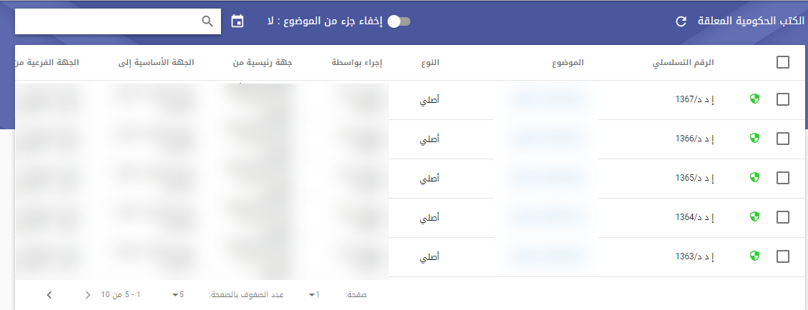


<md-dialog class="context-help-background" id="help-dialog">
    <div layout="column">
        <div class="auto-style1">
        <md-toolbar>
            <span class="p20">الكتب الحكومية المعلقة</span>
            <close-dialog-directive></close-dialog-directive>
        </md-toolbar>
        <md-content class="p20" scroll-directive>
         </div>
         <p class="auto-style1">يسمح النظام الان من خلال شاشة الكتب الحكومية 
		 المعلقة لمدير النظام الاطلاع إذا كان يوجد كتب حكومية معلقة ويمكنه إعادة 
		 تصديرها
		 </p>
		<p class="auto-style1">&nbsp;يمكن لمدير النظام تصدير الكتب من داخل 
		الكتاب أو من الخارج</p>/

        <p class="auto-style1">
            </p>
        </md-content>
        <style type="text/css">
            .auto-style1 {
                text-align: right;
            }
            .auto-style2 {
                vertical-align: middle;
            }
        </style>
    </div>
</md-dialog>

